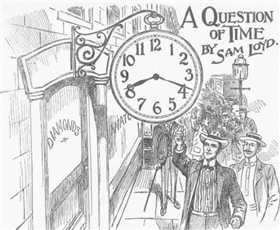

Measuring PuzzlesStarter PuzzlesPuzzle GamesLogic PuzzlesJigsaw PuzzlesNumber PuzzlesCard PuzzlesEinstein PuzzlesSam Loyd PuzzlesAlgebra Puzzles
A Question of Time Puzzle - Solution
The Puzzle:

The hour and minute hands are at equal distance from the 6 hour, what time will it be exactly?
Our Solution:
Say answer is "8 hour X minute". According as proposition, the angle between the minute hand and "mark 4" of the watch is equal to the angle between the hour hand and "mark 8" of the watch.
We know in 60 minutes the minute hand makes 360 degrees (360/60=6 degrees per minute) and the hour hand makes 360/12=30 degrees (30/60=1/2 degrees per minute).
Therefore, (20-X) minutes corresponds to 6(20-X) degrees (this is the angle between the minute hand and "mark 4").
And in X minutes the hour hand makes X/2 degrees with "mark 8".
Thus, X/2=6(20-X) gives X=18 minutes 27 and 9/13 second.
So, the answer is 8 hour, 18 minutes, 27 9/13 second.
We know in 60 minutes the minute hand makes 360 degrees (360/60=6 degrees per minute) and the hour hand makes 360/12=30 degrees (30/60=1/2 degrees per minute).
Therefore, (20-X) minutes corresponds to 6(20-X) degrees (this is the angle between the minute hand and "mark 4").
And in X minutes the hour hand makes X/2 degrees with "mark 8".
Thus, X/2=6(20-X) gives X=18 minutes 27 and 9/13 second.
So, the answer is 8 hour, 18 minutes, 27 9/13 second.
Puzzle Author: Loyd, Sam